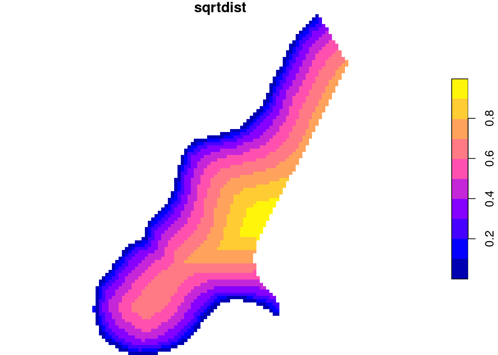

Why do we need models? * to understand relations or processes * to assess (predict, forcast, map) something we do or did not measure and cannot see * to assess the consequence of decisions (scenarios) where we cannot measure
A sample dataset
The meuse dataset is loaded from package sp:
library(sf)# Linking to GEOS 3.10.2, GDAL 3.4.3, PROJ 8.2.1; sf_use_s2() is TRUEdata(meuse.riv, package ="sp")data(meuse, package ="sp")meuse.sf =st_as_sf(meuse, coords =c("x", "y"))meuse.sr =st_sfc(st_polygon(list(meuse.riv)))br =c(0, 100,200,400,700,1200,2000)plot(meuse.sf["zinc"], pch =16,breaks = br, at = br, key.pos =4,main ="zinc, ppm", reset =FALSE)plot(meuse.sr, col ="lightblue", add =TRUE)
Thiessen “polygons”, 1-NN
library(gstat)data(meuse.grid, package ="sp") # data.framelibrary(stars)# Loading required package: abindmeuse.grid =st_as_stars(meuse.grid) # makes it a rastermeuse.grid# stars object with 2 dimensions and 5 attributes# attribute(s):# part.a part.b dist soil # Min. :0 Min. :0 Min. :0 1 :1665 # 1st Qu.:0 1st Qu.:0 1st Qu.:0 2 :1084 # Median :0 Median :1 Median :0 3 : 354 # Mean :0 Mean :1 Mean :0 NA's:5009 # 3rd Qu.:1 3rd Qu.:1 3rd Qu.:0 # Max. :1 Max. :1 Max. :1 # NA's :5009 NA's :5009 NA's :5009 # ffreq # 1 : 779 # 2 :1335 # 3 : 989 # NA's:5009 # # # # dimension(s):# from to offset delta x/y# x 1 78 178440 40 [x]# y 1 104 333760 -40 [y]meuse.th =idw(zinc~1, meuse.sf, meuse.grid, nmax =1)# [inverse distance weighted interpolation]plot(meuse.th[1], nbreaks =29, col =sf.colors(28),main ="Zinc, 1-nearest neighbour", reset =FALSE)plot(st_geometry(meuse.sf), col =3, cex=.5, add =TRUE)
Zinc conc. vs. distance to river: map of linear trend
meuse.grid$sqrtdist =sqrt(meuse.grid$dist)plot(meuse.grid["sqrtdist"], col =sf.colors(), breaks ="equal")

Inverse distance weighted interpolation
Uses a weighted average: \[\hat{Z}(s_0) = \sum_{i=1}^n \lambda_i Z(s_i)\] with \(s_0 = \{x_0, y_0\}\), or \(s_0 = \{x_0, y_0, \mbox{depth}_0\}\) weights inverse proportional to power \(p\) of distance: \[\lambda_i = \frac{|s_i-s_0|^{-p}}{\sum_{i=1}^n |s_i-s_0|^{-p}}\] * power \(p\): tuning parameter * if for some \(i\), \(|s_i-s_0| = 0\), then \(\lambda_i = 1\) and other weights become zero * \(\Rightarrow\)exact interpolator
both are in the “classic statistics” book, and may involve hypothesis testing
both deal with two continuous variables
both look at (first order) linear relations
when correlation is significant, the regression slope is significant
Differences:
Regression distinguishes \(y\) from \(x\): \(y\) depends on \(x\), not reverse;
the line \(y=ax+b\) is not equal to the line \(x = cy + d\)
Correlation is symmetric: \(\Cor(x,y)=\Cor(y,x)\)
Correlation coefficient is unitless and within \([-1,1]\), regression coeficients have data units
Regression is concerned with prediction of \(y\) from \(x\).
The power of regression models for spatial prediction
… is hard to overestimate. Regression and correlation are the fork and knife of statistics.
linear models have endless application: polynomials, interactions, nested effects, ANOVA/ANCOVA models, hypothesis testing, lack of fit testing, …
predictors can be transformed non-linearly
linear models can be generalized: logistic regression, Poisson regression, …, to cope with discrete data (0/1 data, counts, log-normal)
many derived techniques solve one particular issue in regression, e.g.:
ridge regression solves collinearity (extreme correlation among predictors)
stepwise regression automatically selects “best” models among many candidates
classification and regression trees
Why is regression difficult in spatial problems?
Regression models assume independent observations. Spatial data are always to some degree spatially correlated.
This does not mean we should discard regression, but rather think about
to which extent is an outcome dependent on independence?
to which extent is regression robust agains a violated assumption of independent observations?
to which extent is the assumption violated? (how strong is the correlation)
What is spatial correlation?
Waldo Tobler’s first “law” in geography: “Everything is related to everything else, but near things are more related than distant things.” (Tobler 1970)
Setting aside whether Tobler was the first to acknowledge this, and also whether the expression can be called a “law”, we wonder how being related can be expressed?
Tobler, W. R. 1970. “A Computer Movie Simulating Urban Growth in the Detroit Region.”Economic Geography 46: 234–40. https://doi.org/10.2307/143141.